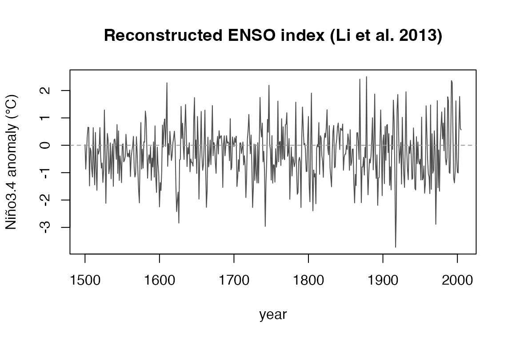
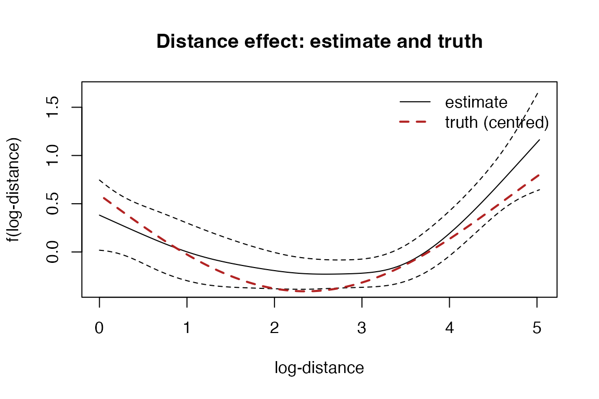

Species invasions as a relational event process
Source:vignettes/species-invasion.Rmd
species-invasion.RmdWhy model invasions as relational events?
A non-native species establishing in a new country is a one-shot
directed event: source country s “invades” target country
r at some time t. Once s has
reached r, the dyad (s, r) is removed from the
at-risk set — it cannot fire again. This is a relational event
process with a one-shot risk = "remove" rule.
Invasions unfold over centuries, so their rate can also follow the
climate: a covariate such as the El Niño/Southern Oscillation takes one
value per year for every dyad. This vignette builds an end-to-end
workflow in amorem:
- Simulate five centuries of invasions driven by distance, an endogenous neighbour pressure, and the reconstructed ENSO index.
- Draw a time-shifted case-control sample, which is what makes the ENSO effect estimable.
- Recover all three drivers with
rem().
Ingredients
We use the 56 × 56 US-state distance matrix shipped with
amorem as a stand-in for inter-country distances, and treat
the states as the country universe.
data("dist_matrix", package = "amorem")
states <- rownames(dist_matrix)
# Convert metres to log-units, scaled to a usable range.
dist_log <- log(dist_matrix / 1e5 + 1)The global covariate is enso_nino34, the tree-ring
reconstruction of the winter Niño3.4 sea-surface temperature anomaly by
Li et al. (2013), one value per year from 1301 to 2005. We keep
1500–2005 and hold each winter’s value through the calendar year it
opens:
data("enso_nino34", package = "amorem")
enso <- enso_nino34[enso_nino34$year >= 1500, ]
g <- data.frame(time_start = enso$year, nino34 = enso$nino34)
plot(enso$year, enso$nino34, type = "l", col = "grey30",
xlab = "year", ylab = "Niño3.4 anomaly (°C)",
main = "Reconstructed ENSO index (Li et al. 2013)")
abline(h = 0, lty = 2, col = "grey60")
A simulated invasion record
The intensity of an invasion from s to r
is
where
is the at-risk indicator (1 until s invades r,
0 thereafter),
is the log-distance with smooth effect
,
is a neighbour pressure — here the half-life-decayed count of past
invasions in the reverse direction (reciprocity_exp_decay,
half-life 50 years) — and
is the ENSO index. We set
and
.
set.seed(4)
ev <- simulate_relational_events(
n_events = 600,
senders = states,
receivers = states,
contribution_logits = sin(-dist_log / 1.5),
baseline_rate = 8e-4,
start_time = 1500,
horizon = 2005,
allow_loops = FALSE,
endogenous_stats = "reciprocity_exp_decay",
endogenous_effects = c(reciprocity_exp_decay = 0.4),
half_life = 50,
global_covariates = g,
global_effects = c(nino34 = 0.6),
risk = "remove"
)
ev <- ev[, c("sender", "receiver", "time")]
nrow(ev)
#> [1] 580
range(ev$time)
#> [1] 1500.129 2004.800risk = "remove" guarantees the realized dyads are all
distinct:
any(duplicated(paste(ev$sender, ev$receiver)))
#> [1] FALSEWhy ordinary case-control sampling cannot see ENSO
Standard nested case-control sampling gives each control its event’s time. ENSO then takes the same value for the event and its control, so its event-minus-control difference is zero in every stratum and the effect drops out of the partial likelihood:
cc0 <- sample_non_events(ev, mode = "one", risk = "remove", seed = 1)
cc0$nino34 <- g$nino34[findInterval(cc0$time, g$time_start)]
w0 <- widen_case_control(cc0, covariates = "nino34")
all(w0$d_nino34 == 0)
#> [1] TRUETime-shifted sampling
Lembo, Juozaitienė, Vinciotti & Wit (2025) sample the controls
from a time-shifted copy of the process instead. Every dyad draws one
shift
;
event
moves to
,
and its control is drawn among the dyads whose back-shifted time
lies in the observation window. The control is evaluated at its own time
,
where the ENSO index takes a different value. With
risk = "remove", a dyad that has already fired before
is not a valid control.
cc <- sample_non_events(ev, mode = "one", risk = "remove", seed = 1,
shift = "exponential", window = c(1500, 2005))
attr(cc, "shift")$mean # mean shift, in years
#> [1] 259.6609
length(attr(cc, "shift")$uninformative)
#> [1] 0Every covariate of a control is then evaluated at its own time. The
neighbour pressure comes from the real invasions before
(history_log), distance is static, and ENSO is read at each
row’s year:
cc <- endogenous_features(cc, stats = "reciprocity_exp_decay",
half_life = 50, history_log = ev)
cc$dist <- dist_log[cbind(match(cc$sender, states),
match(cc$receiver, states))]
cc$nino34 <- g$nino34[findInterval(cc$time, g$time_start)]
w <- widen_case_control(cc, covariates = c("dist", "reciprocity_exp_decay",
"nino34", "time"))
summary(w$d_nino34)
#> Min. 1st Qu. Median Mean 3rd Qu. Max.
#> -3.3750 -0.3703 0.4470 0.5155 1.3320 4.8370Recovering the drivers
rem() fits the degenerate logistic additive model on the
wide case–control table. nl(dist) is the smooth distance
effect, contributing
;
the other two terms are linear.
fit <- rem(~ nl(dist) + reciprocity_exp_decay + nino34,
data = w, method = "gam")
est <- summary(fit)$p.table[, c("Estimate", "Std. Error")]
round(est, 3)
#> Estimate Std. Error
#> reciprocity_exp_decay 0.904 0.514
#> nino34 0.595 0.075The ENSO coefficient is 0.60 (standard error 0.08) against the true 0.6. The neighbour pressure, 0.90 against the true 0.4, has a standard error of 0.51, 7 times larger: few invasions are preceded by one in the opposite direction, so the data hold little information about it. The two estimates lie 0.1 and 1.0 standard errors from their true values. The smooth recovers the shape of the distance effect, up to the additive constant that cancels in event-minus-control differences:
plot(fit, select = 1, shade = TRUE, rug = FALSE,
xlab = "log-distance", ylab = "f(log-distance)",
main = "Distance effect: estimate and truth")
d_grid <- seq(min(dist_log[dist_log > 0]), max(dist_log), length.out = 200)
f_true <- sin(-d_grid / 1.5)
lines(d_grid, f_true - mean(f_true), col = "firebrick", lwd = 2, lty = 2)
legend("topright", c("estimate", "truth (centred)"),
col = c("black", "firebrick"), lty = c(1, 2), lwd = c(1, 2), bty = "n")
Where to go from here
- Observed records:
alien_invasionsships with amorem (first records of alien species by region, 1880-2005); use it in place of the simulated log, with a country-by-country distance table in place ofdist_matrix. - Baseline trend: in observed records the background rate changes over
the centuries (trade, shipping, survey effort). It is a global effect
too, and enters as
nl(time)on the same shifted design. - Timing:
shift_scalesets the mean shift as a multiple of the average event time. Larger shifts carry more information about ENSO but leave more events with no valid control (attr(cc, "shift")$uninformative). - For large state spaces or high invasion rates, switch to the
approximate
method = "tau_leap"simulator with a smalltau; therisk = "remove"rule is honoured under both algorithms.
References
Li J, Xie S-P, Cook ER, et al. (2013). El Niño modulations over the past seven centuries. Nature Climate Change 3, 822–826. https://doi.org/10.1038/nclimate1936
Lembo M, Juozaitienė R, Vinciotti V, Wit EC (2025). Relational event models with global covariates: an application to bike sharing. Journal of the Royal Statistical Society, Series C. https://doi.org/10.1093/jrsssc/qlaf058